The Cilicians
2026-11-10 · ahowl11

Disclaimer - This Dev diary was written by @Ambiorix of Lugdunum one of our writers, I am simply posting it. All screens are taken by the wonderful @Vas
The following dev diary brings us to the southeastern corner of Anatolia. Today we will show you the worst nightmare of any trader, Cilicians 🏴☠️
The first reliable mention of Kilikia is in an Assyrian text of the year 858 BC, which speaks of the land of H̬ilakku (Kurt (2006), “Bin Yıl Asur-Anadolu İlişkilerinde Kilikya Bölgesi.” Belleten 70, (257)). Soon after, the landscape was opened up by Greek traders, who invented Kilix as the eponymous hero and founder of the Cilician people (Greek: Kilikes) (Hdt. 7.91) . The region was split into two distinctive areas: Kilikia Tracheia ("Rough Cilicia"), which was treated in the Assyrian text and encompassed the inaccessible, mountainous interior of Western Cilicia, and Kilikia Pedias ("Flat Cilicia"), the fertile plain and marshes of eastern Cilicia. While they were two geographically distinct areas, it had a common culture. By the 9th century and in contact with the Assyrians, the Cilicians had established early principalities. Greek colonisation, primarily from Samos and Lindos, led to the establishment of early Hellenic outposts such as Soloi, Tarsos and Nagidos. When the Assyrian Empire fell in 609 BC, the Syennesids of Cilicia managed to unify most of the region, with Tarsos becoming their capital. Though Cyrus the Great subdued the Cilicians in the mid-5th century BC, the Tarsian kingdom survived until at least the 4th century BC as an Achaemenid 'vassal' state (Diod. XIV.20). When Alexander conquered the Persian Empire and the Seleucids later inherited Cilicia, several Macedonian military colonies (katoikoi) were planted here: Seleukeia on the Kalykadnos, Epiphaneia and Hierapolis Kastabala were new urban settlements, while Tarsos and Mopsuhestia were temporarily renamed to Antioch on the Kydnos and Seleukeia on the Pyramos respectively. Soon the Ptolemaic dynasty secured their own foothold in Kilikia Tracheia and for the rest of the 3rd century, the two rivalling empires wrestled for control over Cilicia. It is both a strategic location between Asia Minor and the Near East, but also a center of control for eastern Mediterranean sea trade (PECS T.1.tarsus).
In the early 3th century BC, the power of the Ptolemaic and Seleucid kingdoms increasingly waned (Livy XXXVIII, 40). Cilicia as a whole was not an area of primary interest any longer, so that there was less and less centralised political control. This development favoured the rise of piracy across the Eastern Mediterranean. The Romans even worsened this dynamic by undercutting Rhodian trade. Reducing their economic dominance, and thus, the fleet. Together with Cretan pirates especially, the Cilicians began to organise raids over increasing distances and built up a network of bases across the Mediterranean.
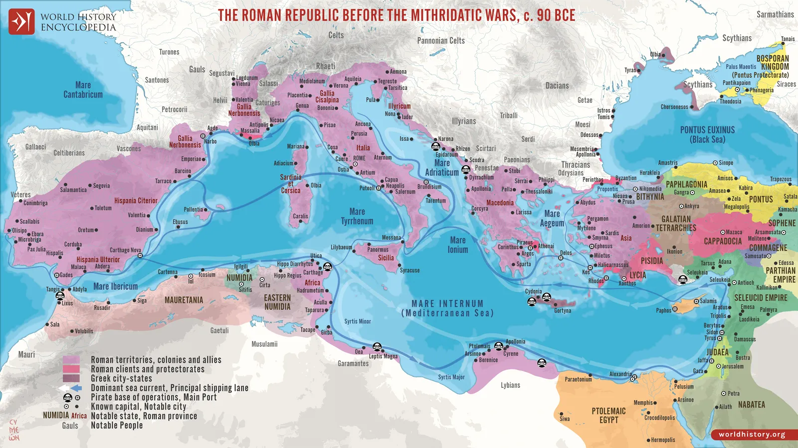
Publius Servilius Vatia Isauricus devastated the land during his campaign against pirates and warlords between 78 and 74 BC. This didn't stop the piracy problem for long (Flor. Epit. I.41.6). When the pirates again made common cause with Mithridates VI of Pontos during the Third Mithridatic War the problem got out of hand (Plut. Pomp. XXIV, 1). They even threatened the area around Rome itself in 68 BC. Pompey was therefore given extraordinary powers to deal with the threat (Appian, Mith., 94). He defeated the Cilician pirates in particular with impressive speed by offering many of them to become his clients and potentially fight in his armies. This was not the end of an independent Cilicia, however, as high up in the Amanos mountains, independent principalities had survived which the Greeks called "Eleutherokilikes" - "free Cilicians." When Cicero was governor of the newly created province of Cilicia in 51/50 BC, he successfully campaigned against these fiefdoms, most of whom accepted to become Roman 'client states'. Yet, the inaccessibility of the mountains made it impossible to monitor them and most of Kilikia Tracheia was given to Amyntas, king of Galatia by the Caesarians in 43 AD and later to Archelaos of Cappadocia, another ally of Rome. Aside from the Amanos fiefdoms, a semi-independent state still existed around the sanctuary of Olba and Antony created a larger kingdom in Kilikia Pedias which was ruled by the so-called Tarkondimotids until 17 AD (Tacitus, Annals II.42). After Tiberius had annexed Cilicia, Caligula gave the northeastern part to the kings of Commagene (a buffer state between Parthia, Armenia and the proper Roman provinces), until Vespasian finally made Cilicia a unified Roman province in 72 AD (Borgia, “Cilicia and the Roman Empire” in Studia Europaea Gnesnensia XVI (2017), pp. 295-318).
Is their faction symbol a looter running around with sacks and gold? 😏 No it is the titan Kronos -combined with Persian influences- holding a solar disk (Müseler, Between Mesopotamia and Greece: Cultural influences in Cilician Coin-iconography from the Late 5th to the Early 4th Century BC (2021), pp. 88, 113). The coin nicely represents the mixture of local, Greek and Persian influences on the region (SNG Hunterian 933).
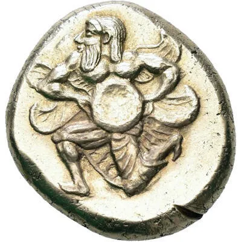
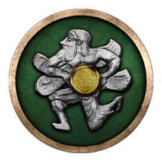
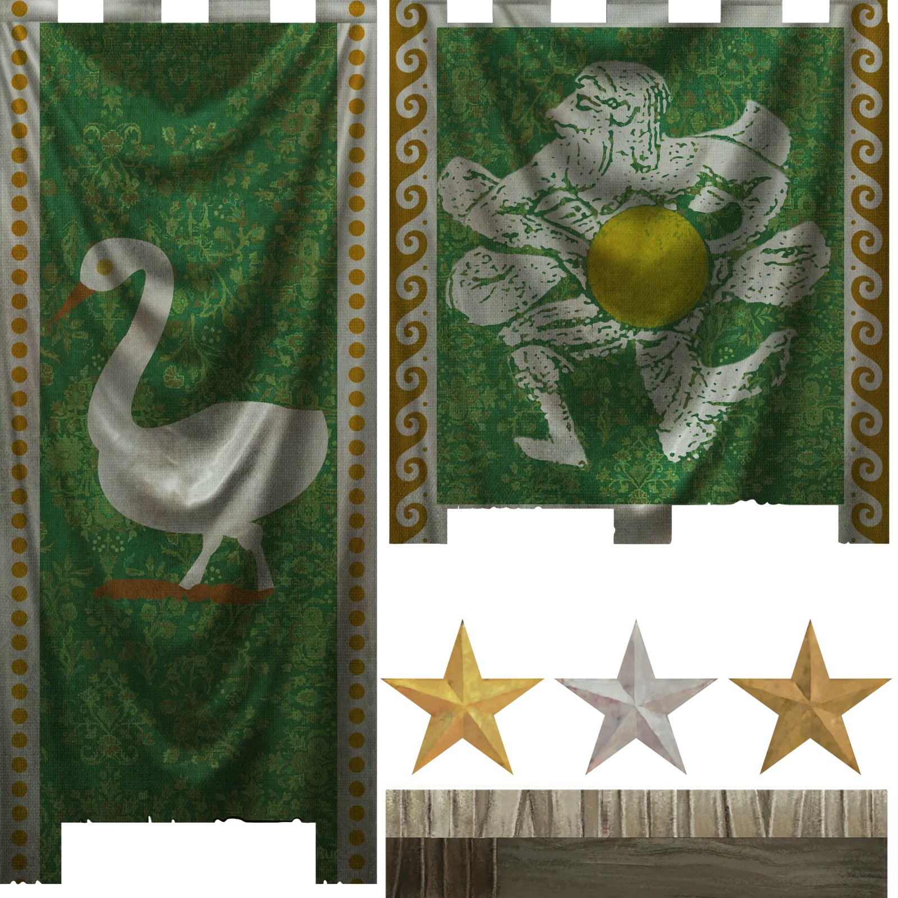
Cilicia revolts itself into the game, but you can just click them in the start menu and you will spawn in after one turn. From there on, you can sow chaos around the map.
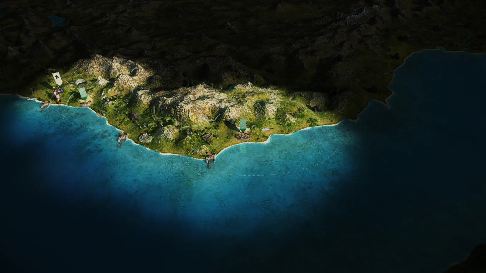
Defence tower from the temple state of Olba, Hellenistic period
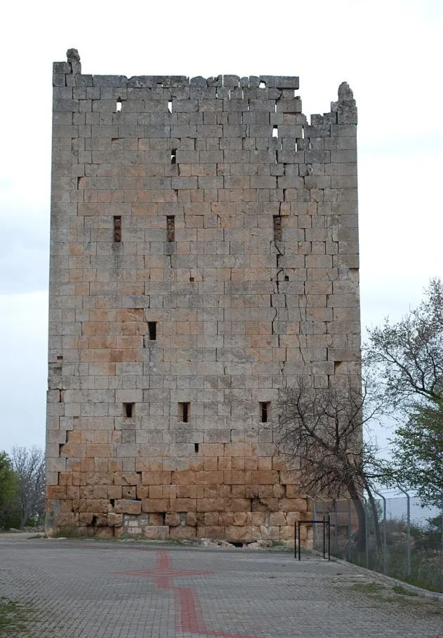
The temple of Zeus Olbios, central sanctuary of Olba
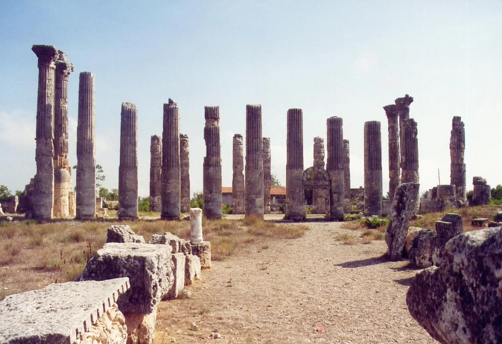
Cilicians were well known as light infantry and frequently served as mercenaries in the armies of the Hellenistic kingdoms. Their spearmen carry equipment typical of the region: woollen eastern tunics, shields made of raw oxhide and a variety of helmet types. Armed with a spear and two javelins, they can harass the enemy before closing in for melee combat. The association of Cilicians with spear fighting is explicitly mentioned by Theokritos, while Herodotos describes their characteristic oxhide shields, woollen tunics and javelins (Theokritos, Idyll XVII; Hdt. 7.91).
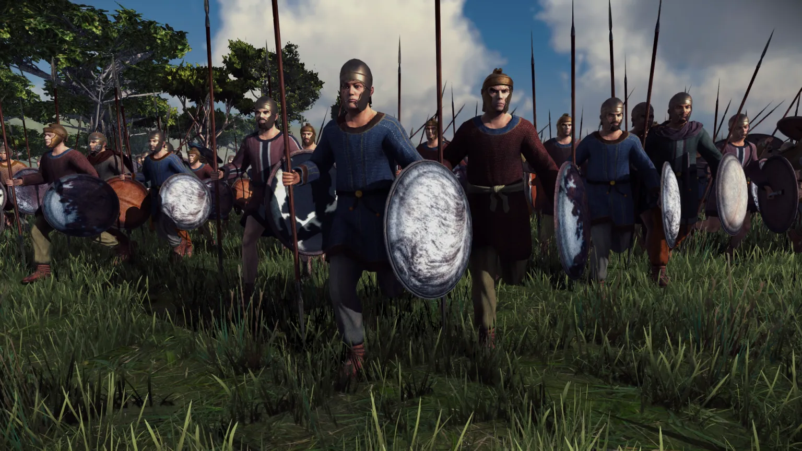
Cilician pirates are lightly armed raiders, equipped to swiftly board ships and disembark on vulnerable coastlines (Philip de Souza, Piracy in the Graeco - Roman World (2012)). These seafarers wear woollen tunics, round shields of raw oxhide and Phrygian caps, with some wearing captured Attic helmets. Although armed with fearsome machaira swords, they primarily fight as skirmishers with javelins. Their equipment is based on Herodotus' description of Cilician marines during the Persian invasion of Greece (Hdt. 7.91).
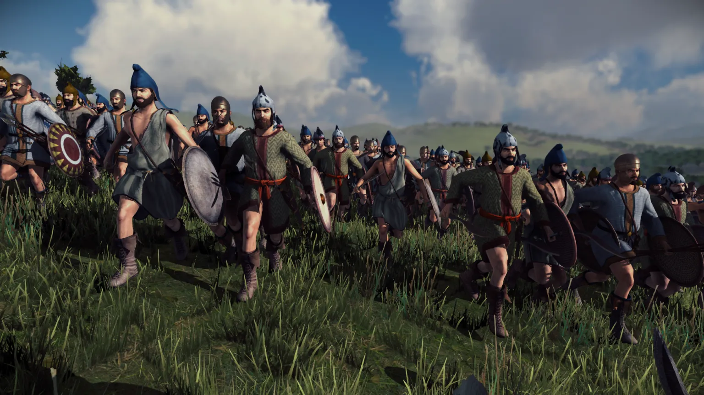
Renowned pirates were wealthy and influential captains whose reputation attracted loyal followers and impressive retinues. Their bodyguards displayed a varied mix of equipment, including linothoraxes, large aspis shields, Macedonian cloaks and crested Phrygian, Roman or Chalcidian helmets. Armed with javelins and swords such as the gladius, kopis or machaira, they combined an imposing appearance with considerable combat experience. Plutarch notes that the most successful pirates flaunted their wealth through lavish ships and equipment, while even men of noble birth were drawn to piracy for the prestige it offered (Pomp. 24.2–3).
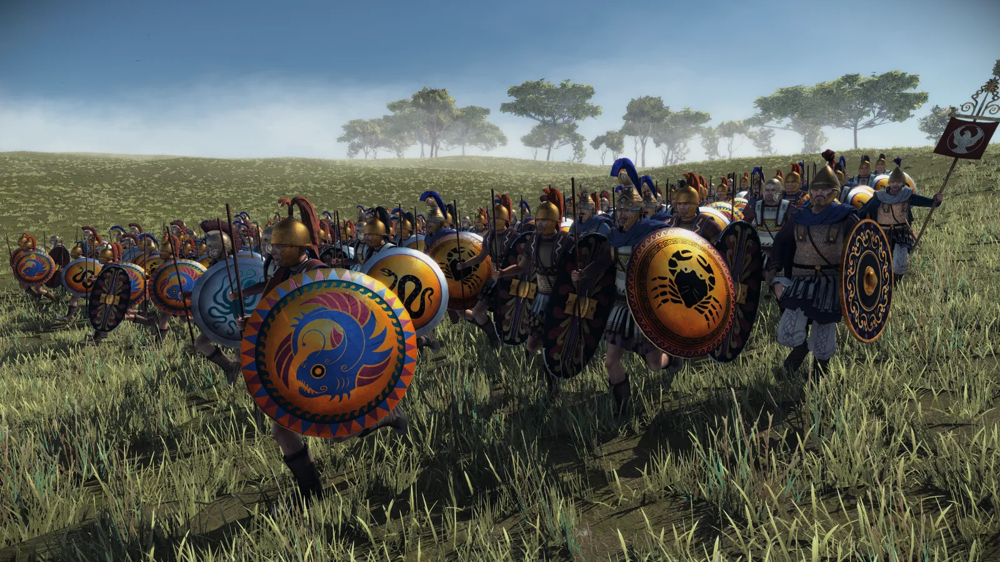
Cilician brigands roam the rugged mountains of western Cilicia, where piracy and banditry often went hand in hand. Equipped with oxhide shields, eastern tunics and a mixture of simple and looted armour, they are intimidating fighters armed with fearsome machaira swords. Their connection to the mountainous interior is reflected in ancient accounts of pirate strongholds near the Taurus Mountains, while Greek terminology itself made little distinction between pirates and brigands (Plut. Pomp. 28; de Souza, Piracy in the Graeco-Roman World (2012), p. 3).
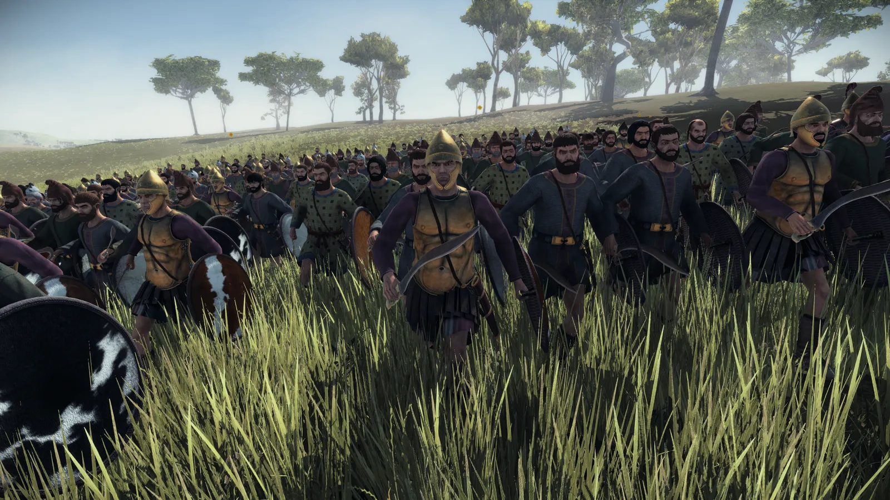
The Kietai are fiercely independent hillmen from the rugged Tauros Mountains, renowned for their resistance to foreign rule and their skill in ambushing enemies on difficult terrain. They resisted the Romans for a long time and even defeated a Roman cavalry force in 52 AD. Armed with slings and curved machaira swords, they are nimble infantry. Their equipment reflects the cultural influences of Cilicia and neighbouring Cappadocia, with woven or Phrygian helmets, light tunics and oxhide shields (Hdt. 7.72.1; 7.91.1; Tac. Ann. 6.41; 12.55).
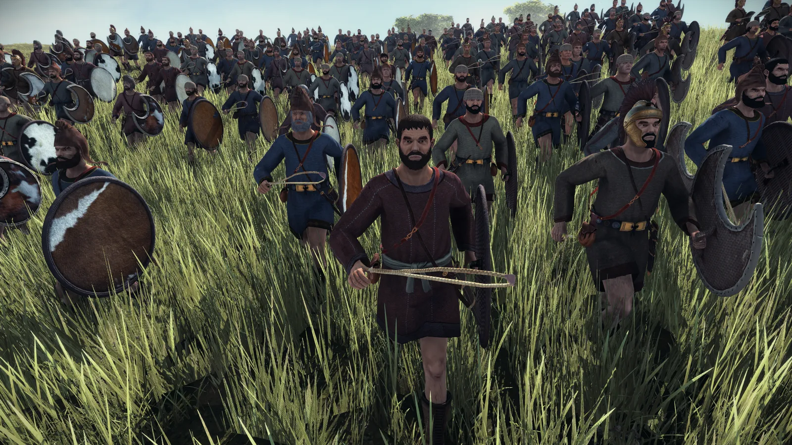
Cilician cavalry were not particularly renowned, but local rulers nevertheless made use of mounted troops when circumstances demanded it. The Persian satrap of the region, Arsames, for instance, commanded cavalry at the Battle of Granikos, where his forces fought Alexander's Companion Cavalry (Diod. 17.19.4). Their equipment reflects Cilicia's position at the crossroads of the Hellenistic and Persian worlds: oxhide shields, javelins and long spears, alongside a mixture of Greek helmets, linothorakes and Persian leather cuirasses. The latter are inspired by the 4th-century BC Çan Sarcophagus, which depicts a Persian nobleman wearing distinctive leather armour while fighting on horseback (Rose, The Tombs of the Granicus River Valley IV: The Çan Sarcophagus (2013), p. 136; Hdt. 7.91.1).
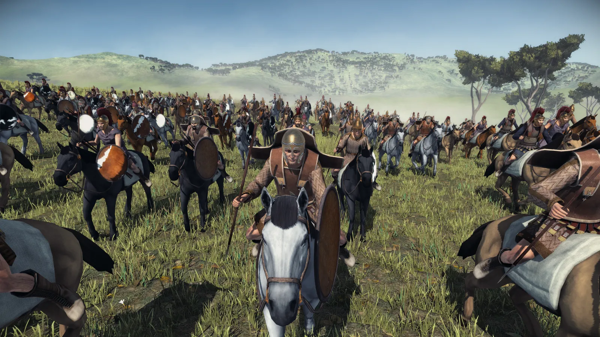
Don’t expect a Cilician general to fight other horsemen. It mainly consists of skirmishers in tunics. They depict the bodyguard of the local Cilician dynasts and tyrants.
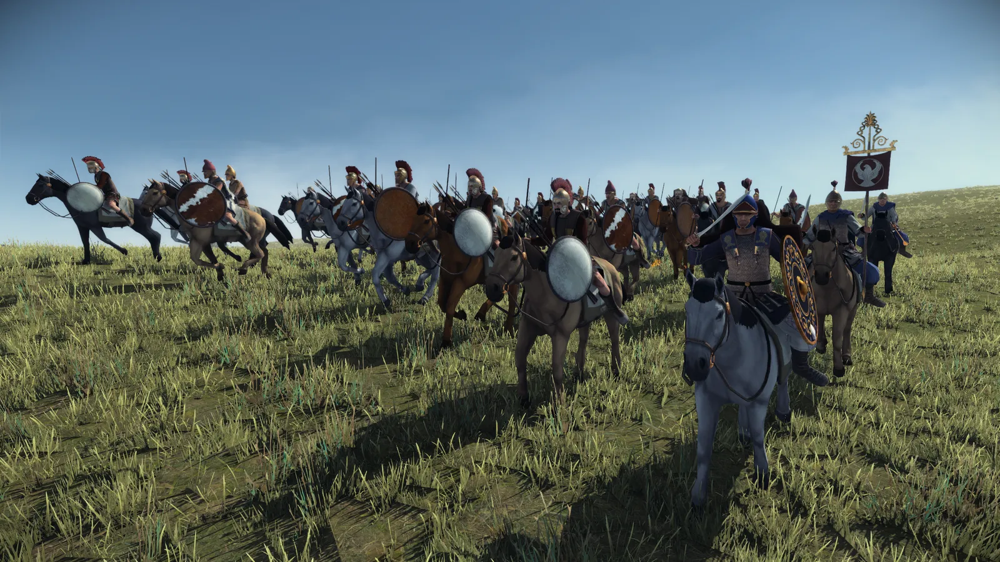
When you are a Cretan archer and out of a job, what do you do? Plunder or train others! By the 3th century BC warfare between Hellenistic kingdoms was not as lucrative as before for the Cretan archers. It is therefore not surprising that Crete became a pirate hotspot. These worked together with Cilician pirates to establish bases around the Mediterranean (Strabo, Geography, Book X, 4). These marksmen are a great addition to lay fire on the whole of the Mediterranean! Aside of this collboration, the Neocretans probably trained Cilicians in the Seleucid army. Livy (XXXVII, 40) says this about the Seleucid army at Magnesia: "(...) then, 1000 Neo-Cretans, and 1500 Carians and Cilicians armed in the same manner"
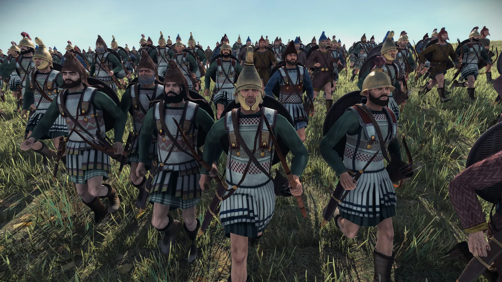
Plutarch states that the pirates controlled up to 400 towns and cities (Plut. Life of Pompey, XXIV, 4), meaning that they had the opportunity to siege down certain cities like Delos. While doing this they gathered loot like helmets and linothoraxes. The main feature of this upgraded spearmen unit is their thureophoroi. This shield in Galatian design is based on a late Hellenic terracotta figure found in Tarsos, in eastern Cilicia (Sekunda, The Introduction of Cavalry Thureophoroi into Greek Warfare (2006), p.14). This unit represents the cultural influence by their Gallic neighbours and the Seleucid interest in outfitting Cilician spearmen in the latest military innovations. They are unlocked after the Cilician Thureophoroi Reform, which triggers after fighting 49 land battles.
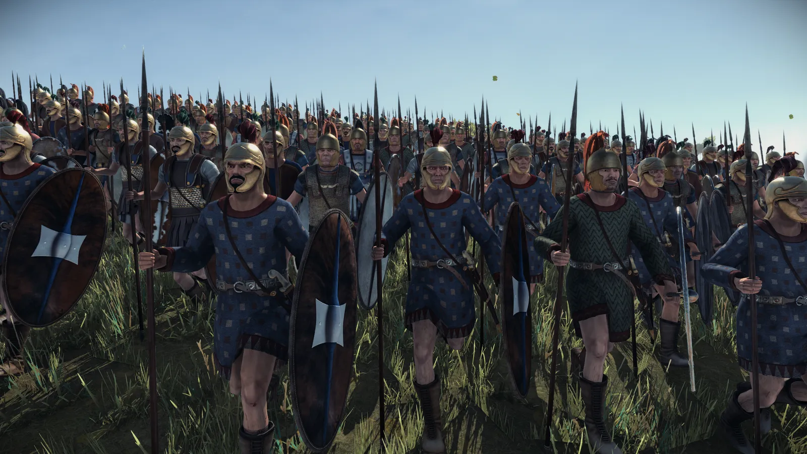
This faction has a well rounded roster. You will, however, have to fight asymmetrically against the big empires around you in order to stay alive.
Action Shots!
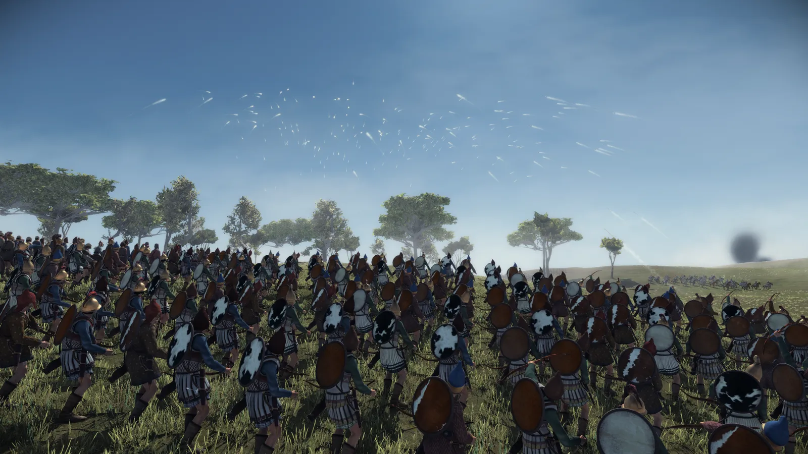
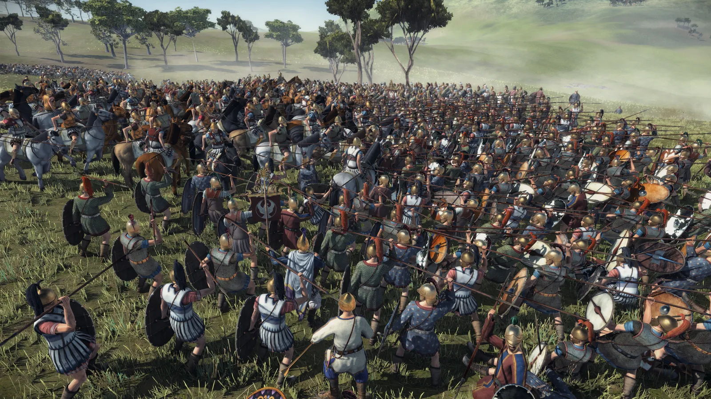
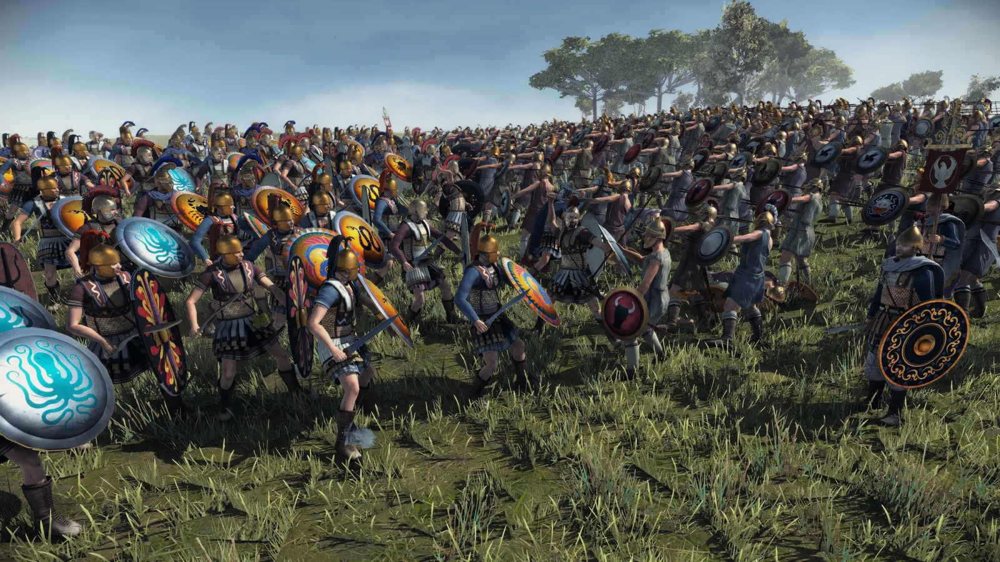
This concludes our Developer Diary for today! (Start here: https://discord.com/channels/714205632663912498/894286297802362931/1569710170257367182) Discuss your thoughts and questions in a channel and see you next time!